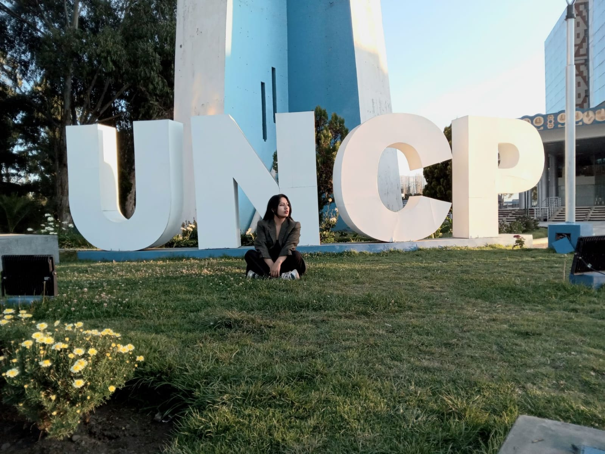
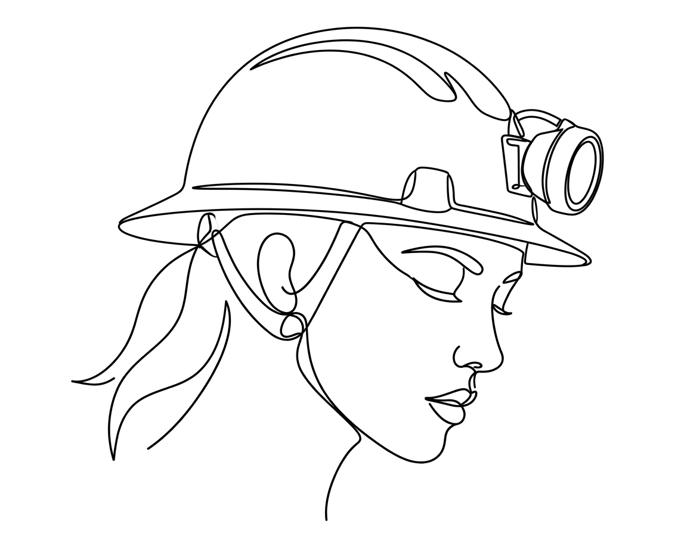

Bachiller en Ciencias Sociales de la Universidad Nacional del Centro del Perú (UNCP). Con un intercambio académico en la UNMSM enfocado en psicología organizacional.
Apasionada por la minería, con la visión de acompañar e inspirar a más mujeres a sumarse al sector.

investigación y proyectos
¿Desensibilización profesional? El uso de la IA generativa en la formación de Trabajo Social
Tesis cualitativa fenomenológico-etnográfica (UNCP, 2025), co-autoría con Lucinda Fernández Inga, bajo la asesoría del Dr. Ricardo Soto Sulca. Análisis apoyado en MAXQDA Pro.
La investigación explora cómo estudiantes de Trabajo Social de la UNCP perciben y usan la inteligencia artificial generativa en su proceso de aprendizaje. Parte de una pregunta poco explorada: qué pasa cuando una disciplina construida sobre el análisis crítico, la empatía y la intervención humana directa se encuentra con herramientas que ofrecen atajos para pensar.
El estudio encuentra un uso extendido y cotidiano de la IA, pero también una señal de alerta: varias estudiantes describen una dependencia creciente que reemplaza el esfuerzo reflexivo propio de la carrera.
Buscamos visibilizar una realidad cada vez más presente en la educación superior: la rápida incorporación de la IA generativa en el proceso de aprendizaje universitario.
Aunque estas herramientas se han extendido aceleradamente, existe poca evidencia sobre cómo son percibidas dentro de una disciplina sustentada en el análisis crítico de la realidad social, la empatía y la intervención humana con personas y comunidades. Los hallazgos preliminares muestran que la IA es un recurso frecuente para la búsqueda, organización de información, redacción y síntesis de contenidos, apreciada por su rapidez y accesibilidad.
Datos clave en Perú (UCSS): 73.2% de universitarios usa IA en sus tareas; la cifra sube a 82.0% en universidades públicas. Las herramientas más usadas son ChatGPT, Grammarly y Copilot.
Voz de las estudiantes: una informante clave describió que ya no analiza los casos por sí misma, sino que le pregunta directamente a la IA y copia la respuesta — lo que llamamos un "atajo" que se vuelve hábito y reemplaza el esfuerzo reflexivo.
Riesgo en la praxis humanista: la formación en Trabajo Social se ejerce con personas, familias y comunidades, donde son indispensables la escucha activa, la empatía y la comprensión del contexto cultural y emocional. Delegar el análisis a la IA implica el riesgo de intervenir sin comprender la realidad humana compleja.
Estrategias propuestas para una alfabetización digital crítica, por actor: estudiantes (usar la IA como asistente complementario, sin perder autonomía de análisis), docentes (evaluaciones situadas y debate sobre ética algorítmica), universidad (políticas de ética digital y talleres de uso reflexivo) y sociedad (preservar la calidez humana y el juicio ético en la intervención social).
¿En 10 años seguiremos formando trabajadoras sociales con criterio y empatía, o profesionales que dejan que la IA piense y decida por ellas?
Esa es la pregunta que queda abierta al cierre del estudio: la IA generativa ya es parte cotidiana de la formación en Trabajo Social, y el reto no es prohibirla sino asegurar que se use como apoyo — sin que reemplace el criterio, la empatía y el análisis situado que la profesión exige.
¿Algún comentario sobre esta investigación? Escríbeme.
Umalliq Warmi · 1er puesto
Proyecto Aurora
Escenarios de minería a tajo abierto, subterránea y espacio marítimo recreados en Roblox para educar a las nuevas generaciones sobre minería mediante gamificación.
Ver puntos clave ↓
ISO 26000
Ecosem Smelter
Responsabilidad Social en la Empresa Comunal ECOSEM-Esmelter S.A. — diagnóstico, plan y ejecución bajo el marco ISO 26000.
Ver puntos clave ↓
Próximo proyecto · en definición
Vida de una trabajadora social en minería
Un proyecto para mostrar, a través de Instagram y TikTok, cómo es el día a día de una trabajadora social dentro de la industria minera.
Ver puntos clave ↓
Proyecto desarrollado para el programa Umalliq Warmi (Women in Mining Perú).
Concepto: uso de la plataforma Roblox para crear escenarios interactivos de minería a tajo abierto, minería subterránea y espacio marítimo.
Objetivo: educar a las nuevas generaciones sobre minería a través de la gamificación, acercando el sector a niños y jóvenes desde el juego.
Resultado: ganador del primer puesto en el concurso de proyectos del programa, por su mirada amplia, actual y ligada a la gamificación como herramienta educativa.
Proyecto de responsabilidad social — Facultad de Trabajo Social UNCP, comunidad de Colquijirca.
Problemática: Ecosem-Esmelter genera empleo, pero deja fuera a quienes no se benefician del trabajo remunerado directo; se busca que la responsabilidad social alcance a las familias, no solo a los trabajadores.
Objetivo general: fomentar la responsabilidad social en la empresa ECOSEM Smelter S.A.
Objetivos específicos: promover el compromiso social de directivos y colaboradores con la zona de influencia; mejorar la relación entre la empresa y la comunidad de Colquijirca.
Metas: 60% de pobladores de la comunidad de Esmelter involucrados en las actividades de responsabilidad social; 5 actividades de RS ejecutadas.
9 actividades ejecutadas: presentación del equipo de Proyección Social; diagnóstico y plan general de RS; taller de habilidades blandas "Liderar y triunfar"; jornada ambiental con escolares "Comprometidos con el planeta"; campaña de limpieza "Cuidando mi segundo hogar"; escuela de padres "Fortaleciendo nuestros lazos familiares"; feria de servicios "Smelter te atiende"; taller sobre la no violencia contra la mujer "Hogares inquebrantables"; siembra de árboles "Huellas verdes Smelter".
Formatos que estoy explorando para este proyecto.
Formato: series cortas tipo "un día en el trabajo".
Formato: cápsulas de glosario minero-social.
Formato: entrevistas breves a otras mujeres del sector.

El talento no tiene género.
blog personal
Experiencias y eventos
Un registro que voy ampliando cada vez que quiero — programas, comunidades y eventos de los que he sido parte.
Debug Colectiva
Debug Colectiva es una comunidad que visibiliza, documenta y fortalece el trabajo de mujeres de ciencias sociales que trabajan con datos, programación e investigación aplicada. Usa espacios como GitHub y LinkedIn para mostrar proyectos reales: análisis de datos, trabajo de campo, diseño metodológico e investigación cualitativa.
Mi mirada: me parece un espacio muy valioso porque está dirigido a mujeres en ciencias sociales, lo que abre oportunidades de diálogo, difusión y acompañamiento. Tener una mentora fue clave — la mía fue Magdalena Monrroy, un gran apoyo durante el proceso.
Women in Mining Perú es una asociación que busca poner en relieve la participación de las mujeres en el sector minero, promoviendo su crecimiento personal y profesional. En 2025 me uní a la comunidad como una de las 31 becarias de su programa Umalliq Warmi, un proceso muy competitivo.
Mi mirada: el programa combina sesiones virtuales y presenciales con formación técnica, habilidades blandas y mentoría, incluida una visita técnica a Cerro Lindo (Nexa). Conocí grandes amigas y profesionales en el camino.
PERUMIN 37
PERUMIN es la convención minera líder en Latinoamérica, organizada por el IIMP. La edición 37 se realizó del 22 al 26 de septiembre de 2025 en el Centro de Convenciones Cerro Juli, Arequipa, y reunió a más de 300 jóvenes universitarios en su Programa de Líderes Estudiantiles.
Mi mirada: participé como líder estudiantil durante una semana en Arequipa. Fue una experiencia que me ayudó a conectar con el sector y conocer nuevas personas.
Amautas Mineros
Amautas Mineros es un voluntariado enfocado en dar charlas a colegios y escuelas sobre minería sostenible, acercando el sector a las nuevas generaciones desde las aulas.
Mi mirada: fue mi primer voluntariado, y gracias a él siento pasión por la minería. He participado en distintos eventos gracias a Amautas.
Solidaritas Perú
Solidaritas Perú es una ONG peruana con alcance latinoamericano enfocada en el desarrollo sostenible, la gobernanza y la interculturalidad. Su programa de liderazgo aborda temas como gestión social, elaboración de proyectos, diálogo y negociación.
Mi mirada: como producto final estoy elaborando un artículo, que ya vengo trabajando a partir de lo aprendido durante el programa.
bloc de notas
Leyendo ahora: "Sapiens: De animales a dioses" (Yuval Noah Harari).
Frase que me quedó grabada: "Hazlo simple, pero significativo."
Próxima meta: obtener mi título profesional.
Dato curioso del mes: a dic. 2025, la participación femenina en minería en el Perú llegó a 7.9% (21,801 mujeres) — cada vez más como operadoras de maquinaria pesada, ingenieras de mina y geólogas.